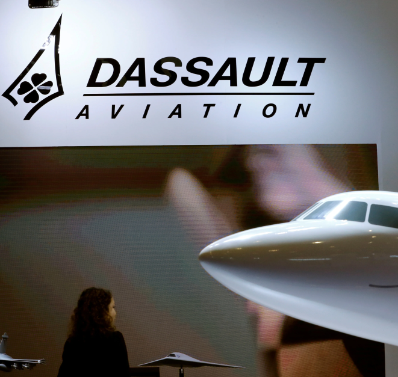
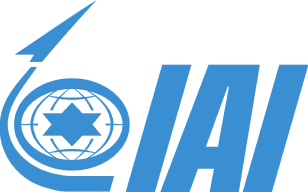

Chez FURKAN Solutions, nous sommes fiers d’être des partenaires historiques et de confiance de Dassault Aviation, un acteur incontournable de l’aéronautique française. Collaborateurs de la première heure, nous partageons avec Dassault la passion de l’innovation et de l’excellence technologique, deux piliers fondamentaux qui nous guident dans notre mission. En tant que distributeur d’avions de chasse adaptés à un usage civil, nous mettons un point d’honneur à vous offrir le meilleur de l’ingénierie aéronautique. Grâce à notre relation étroite avec Dassault, nous proposons des appareils combinant performance, fiabilité et élégance, pour des expériences de vol hors du commun. Ensemble, FURKAN Solutions et Dassault Aviation façonnent l’avenir de l’aviation civile de haute performance, en rendant accessible des technologies avant-gardistes issues de l’industrie de la défense. Faites confiance à un savoir-faire unique et à une alliance fondée sur l’excellence française.
Chez FURKAN Solutions, nous sommes fiers d’être des partenaires historiques et de confiance de Dassault Aviation, un acteur incontournable de l’aéronautique française. Collaborateurs de la première heure, nous partageons avec Dassault la passion de l’innovation et de l’excellence technologique, deux piliers fondamentaux qui nous guident dans notre mission. En tant que distributeur d’avions de chasse adaptés à un usage civil, nous mettons un point d’honneur à vous offrir le meilleur de l’ingénierie aéronautique. Grâce à notre relation étroite avec Dassault, nous proposons des appareils combinant performance, fiabilité et élégance, pour des expériences de vol hors du commun. Ensemble, FURKAN Solutions et Dassault Aviation façonnent l’avenir de l’aviation civile de haute performance, en rendant accessible des technologies avant-gardistes issues de l’industrie de la défense. Faites confiance à un savoir-faire unique et à une alliance fondée sur l’excellence française.

Chez FURKAN Solutions, notre partenariat avec Saab reflète notre engagement envers l’excellence et l’innovation dans le domaine de l’aviation. Collaborateurs intîmes, nous avons su tisser des liens solides avec ce géant suédois de l’aéronautique, reconnu mondialement pour ses avions de chasse d’exception et ses technologies de pointe. En tant que distributeur d’avions de chasse pour un usage civil, nous bénéficions de l’expertise unique de Saab, qui a toujours su repousser les limites de l’ingénierie aéronautique. Grâce à ce partenariat stratégique, FURKAN Solutions met à votre disposition des appareils alliant puissance, maniabilité et sécurité, pour des performances inégalées dans les airs. Avec Saab comme allié de longue date, nous avons à cœur de rendre accessibles des technologies de défense d’avant-garde à une clientèle civile exigeante et passionnée. Choisissez FURKAN Solutions pour une aviation d’exception, portée par un savoir-faire suédois et une vision avant-gardiste.


Chez FURKAN Solutions, nous sommes honorés d’être partenaires de Lockheed Martin, un leader mondial de l’aéronautique et de la défense. Collaborateurs de la première heure, nous partageons avec cette icône américaine une même quête : repousser les limites de la technologie pour offrir des solutions aéronautiques innovantes et performantes. Grâce à ce partenariat stratégique, FURKAN Solutions propose des avions de chasse destinés à un usage civil, conçus sur la base des technologies avancées développées par Lockheed Martin. Ces appareils, synonymes de puissance, de précision et de fiabilité, incarnent l’excellence aéronautique et garantissent une expérience de vol incomparable. Avec Lockheed Martin à nos côtés, nous mettons à votre portée des produits issus des normes les plus élevées de l’industrie de la défense. Faites confiance à FURKAN Solutions pour une aviation civile de haut niveau, fruit d’un partenariat solide avec un acteur emblématique du secteur.


Chez FURKAN Solutions, nous sommes fiers de notre partenariat de longue date avec Israel Aerospace Industries (IAI), un pionnier de l’aéronautique et des technologies de défense. Collaborateurs de la première heure, nous partageons avec IAI la passion pour l’innovation et l’expertise technique, au service de solutions aéronautiques d’avant-garde. Grâce à cette collaboration stratégique, FURKAN Solutions propose des avions de chasse adaptés à un usage civil, conçus avec les technologies de pointe issues du savoir-faire d’IAI. Ces appareils incarnent une combinaison unique de puissance, de performance et de sécurité, offrant une expérience de vol exceptionnelle à nos clients les plus exigeants. Avec le soutien d’IAI, nous avons pour mission de rendre accessibles des technologies aéronautiques de classe mondiale, issues de l’industrie de la défense. En choisissant FURKAN Solutions, vous optez pour une aviation d’excellence portée par un partenariat solide avec l’un des acteurs les plus innovants du secteur.